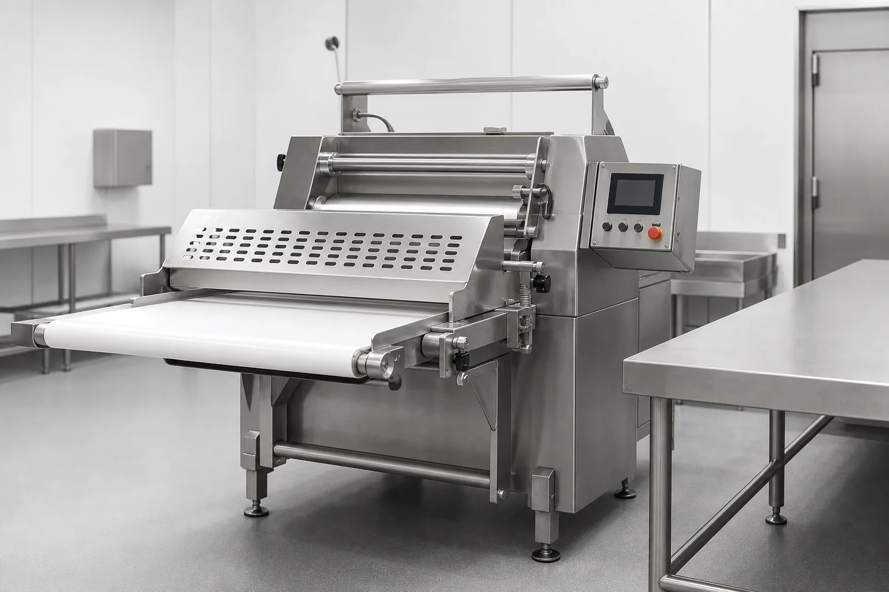

Под ваш станок
Учитываем модель, длину, ширину и толщину полотна.
Оборудование и расходные материалы для мясопереработки
Подбираем станки, пильные полотна и расходные материалы для разделки мяса, курицы, птицы, туш, полутуш и замороженной продукции.
Поможем подобрать полотно под модель оборудования, материал реза, шаг зуба, длину и режим работы. Отдельно подбираем решения для снятия кожи с туш.

Учитываем модель, длину, ширину и толщину полотна.
Подбор под мясо, кость, курицу, туши и заморозку.
Подбираем шаг зуба, тип полотна и режим эксплуатации.
Отдельные решения для снятия кожи с туш и полутуш.
Основной ассортимент
Главная задача сайта - быстро привести клиента к подбору оборудования или полотна под конкретный станок и продукт.

Пильные полотна для разделки мяса, костей, туш, полутуш и замороженных блоков.
Подбор полотна по длине, ширине, толщине, шагу зуба и режиму работы оборудования.
Оборудование для разделки мясной продукции, туш, полутуш, птицы и замороженного сырья.

Решения для аккуратной и производительной разделки птицы, частей тушек и охлажденного сырья.

Отдельное направление для предприятий, которым нужны решения для снятия кожи с туш и полутуш.
Поставки расходников и сопутствующих позиций, которые нужны для стабильной работы участка разделки.
Подбор полотна
Чем точнее входные данные, тем быстрее можно подобрать ленточную пилу под станок и продукт. Если часть параметров неизвестна, можно отправить фото шильдика станка или старого полотна.
Отправить параметрыЗаявка без лишней переписки
Можно отправить параметры письмом или приложить фото станка, шильдика и старого полотна. Если часть данных неизвестна, начнем подбор по фото.
| Параметр | Что указать |
|---|---|
| Модель станка | Производитель, модель или фото шильдика |
| Длина полотна | Фактическая длина старого полотна или данные из паспорта |
| Ширина и толщина | Если известны, укажите значения в миллиметрах |
| Шаг зуба | Если неизвестен, отправьте фото полотна крупным планом |
| Продукт | Мясо, кость, птица, туши, полутуши или заморозка |
| Количество и город | Сколько полотен нужно и куда рассчитать поставку |
Микро-каталог
Раздел помогает сразу перейти от общей информации к конкретному запросу: полотно, станок, снятие кожи или расходные материалы.
Полотна
Подбор полотен для охлажденного мяса, туш и полутуш с учетом станка и нагрузки.
Подобрать под мясоНагрузка
Полотна для более жесткого реза, где важны ресурс, шаг зуба и стабильность реза.
Запросить для костиЗаморозка
Подбор под замороженные блоки, сырье высокой плотности и регулярную сменную работу.
Подобрать для заморозкиПтица
Решения для разделки птицы, частей тушек и производственных участков с повторяемыми операциями.
Подобрать для птицыОборудование
Запрос оборудования под разделку мяса, птицы, туш, полутуш и замороженного сырья.
Запросить станокОперация
Отдельный подбор оборудования и расходных материалов под операцию снятия кожи.
Перейти к снятию кожиРасходники
Сопутствующие позиции для стабильной работы участка разделки и обслуживания оборудования.
Запросить расходникиПодбор
Если известна модель станка или есть фото старого полотна, можно сразу отправить параметры.
Что отправитьЛенточные пилы
На отдельной странице собран фокус по ленточным полотнам: что важно указать, как оформить заявку и какие задачи закрывает подбор.
Не продвигаем универсальное решение там, где нужно попасть в конкретные размеры оборудования.
Разные режимы для охлажденного мяса, кости, птицы и замороженной продукции.
Учитываем текущие проблемы: ресурс, качество реза, частоту простоев и замен.
Формируем понятный запрос для поставки: параметры, количество, сроки и контакты.
Отдельное направление
Этот блок нужен на сайте отдельно, потому что запрос отличается от обычного подбора пильного полотна. Клиенту важно быстро понять, что можно обсудить оборудование или расходные материалы под операцию снятия кожи с туш и полутуш.
Запросить решениеКак работаем
Вы отправляете модель станка, размеры полотна или описание производственного участка.
Разбираем продукт, нагрузку, текущие проблемы и желаемый результат.
Формируем вариант по полотну, оборудованию или направлению снятия кожи.
Фиксируем параметры, количество, сроки, контакты и удобный способ связи.
Доверие и условия
Фиксируем параметры до согласования заказа: модель станка, размеры полотна, продукт, количество и город поставки. Это снижает риск ошибки при подборе.
Можно отправить модель оборудования, фото шильдика или размеры старого полотна. Если данных мало, уточняем их до расчета.
Наличие, цена, сроки и комплектация зависят от параметров и согласуются отдельно перед поставкой.
Количество, город, способ доставки и удобный канал связи фиксируются в заявке перед подтверждением.
Сайт не обещает универсальные полотна для всех станков. Подбор идет по задаче, размерам и режиму работы.
Дополнительное направление
Кормовое направление сохраняется на сайте как дополнительная секция, но не конкурирует с главным фокусом на пильных инструментах и оборудовании для мясопереработки.

Дополнительное направление поставок для сельхозпредприятий и производств.

Жмых, барда, люпин и другие позиции по отдельным запросам.

Добавки и сопутствующие позиции не являются главным направлением нового сайта.
Контакты
Укажите модель станка, размер полотна, тип продукта и задачу. Если речь о снятии кожи с туш, опишите процесс и желаемую производительность.